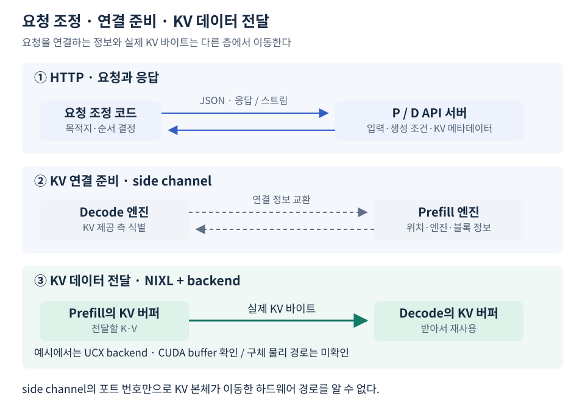

Python 환경에 NIXL을 설치하고 vLLM 옵션을 지정하면 KV 전송 코드를 사용할 수 있다. 그렇다고 모든 전송이 Python 코드만으로 수행되거나, NIXL이라는 이름으로 물리 경로까지 정해지는 것은 아니다. 여기서는 설치·연결·데이터 이동의 책임을 나눈다.
Connector는 vLLM 쪽 연결 구현이고 NIXL은 별도 라이브러리다
NixlConnector는 vLLM의 요청·KV 블록 처리를 NIXL 전송 기능에 연결한다. nixl은 이 환경에서 별도로 설치한 패키지다. NIXL에는 네이티브 구현과 Python 바인딩이 있으므로 Python 패키지로 설치한다는 것과 순수 Python 라이브러리라는 것은 다르다. NIXL의 Python 인터페이스 설명
저장소의 vLLM 의존성 파일에서는 기본 환경과 P/D용 추가 의존성을 구분한다.
[project.optional-dependencies]
pd = [
"nixl==1.3.2; sys_platform == 'linux' and platform_machine == 'x86_64'",
]
이 코드는 사용한 설치 조건의 발췌이지 모든 환경에서 이 패키지 하나만 설치하면 된다는 뜻이 아니다. GPU 드라이버·CUDA·전송 backend 등과의 호환도 필요하다. 고정 버전의 설치 원본은 함께 보존된 uv.lock이다.
주소 교환과 KV 본체의 이동은 분리된다
요청 조정 코드는 HTTP로 KV 메타데이터를 받고 D에 넘긴다. D는 제공 측 엔진과 연결에 필요한 정보를 교환하고 전송을 시작한다. 이때 사용한 remote_port=5600은 P 쪽 side channel 정보이지, “96.75 MiB의 KV가 HTTP JSON으로 5600에 실려 갔다”는 뜻이 아니다.

pull은 D가 가져오기를 시작한다는 뜻이다. KV 바이트의 이동 방향은 P에서 D로 향한다. 모든 요청마다 이미 연결된 엔진 간 정보를 처음부터 다시 교환한다는 의미는 아니다.
PCIe·NVLink와 직접 접근 여부는 별도로 확인한다
같은 호스트의 GPU라도 연결 구조와 지원 기능에 따라 사용할 수 있는 경로가 달라진다. PCIe·NVLink는 하드웨어 연결의 이름이고, GPU 직접 접근이나 호스트 메모리 경유는 데이터 이동 방식의 구분이다. NIXL은 이런 조건을 이용하는 backend 위에서 동작한다. NIXL UCX backend 설명
예시에서는 UCX backend와 CUDA KV buffer를 확인했다. 이 사실은 다음과 구분한다.
- CUDA buffer: KV를 담는 버퍼의 종류다. 전체 이동 구간이 GPU 직접 전송이었다는 증거는 아니다.
- PHB·NODE: GPU 토폴로지 표의 연결 관계다. 실행 중 선택된 전송 경로를 추적한 결과는 아니다.
- 전송 메트릭: 실제 전달량·라이브러리 관측 시간을 나타낸다. 느린 원인이 특정 링크라는 증거까지 제공하지는 않는다.
같은 호스트 실험의 모든 전송 비용을 “네트워크 카드 비용”으로 부르지 않는다. 구체 경로가 미확인일 때는 KV 전달 비용이라고 표현하는 편이 정확하다.
NCCL을 배운 것과 NIXL을 쓰는 것은 충돌하지 않는다
TP에서는 여러 GPU가 같은 모델 계산의 부분 결과를 만들고 AllReduce 같은 통신 연산으로 결합한다. 여기서는 이미 계산된 KV 상태를 다른 엔진으로 넘긴다. 이번 P/D 코드가 선택한 것은 NixlConnector이며, 이전 TP에서 NCCL을 사용했다고 이번 KV도 자동으로 NCCL을 통하는 것은 아니다.
이 설명은 NCCL의 용도를 AllReduce 하나로 제한하거나, P/D에 반드시 NIXL만 사용할 수 있다는 뜻은 아니다. 어떤 계산·전달을 요구하는지와 어떤 라이브러리·Connector로 구현했는지를 나누어 보는 것이 핵심이다.
현재 자료의 검증은 전달 성공과 비용까지다. 경로별 로그·프로파일링이나 경로를 통제한 비교는 수행하지 않았다. 따라서 이후 경로 최적화를 검토하더라도 현재 측정에 특정 경로를 소급해서 붙이지 않는다.